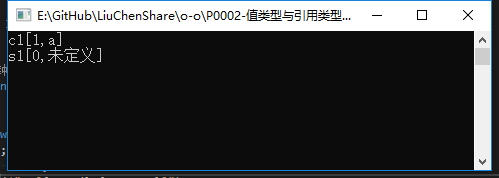

一直以来对于值类型与引用类型之间的区别都不是特别清晰，直到踩了坑....
正好最新闲暇，便想着梳理梳理这一两年来遇到的奇葩问题和解决方案，顺便就把它给拎出来记一下，免得以后再摔跤
今天为了说明值类型与引用类型的典型区别，准备把结构体（值类型）和类（引用类型）拉出来溜溜
/// <summary>
/// 类
/// </summary>
class TestClass
{
public int Id { get; set; }
public string Name { get; set; }
}
/// <summary>
/// 结构体
/// </summary>
struct TestStruct
{
public int Id { get; set; }
public string Name { get; set; }
} class Program
{
static void Main(string[] args)
{
//测试引用类型
TestClass c1 = new TestClass { Id = 0, Name = "未定义" };
TestClass c2 = c1;//c1给了c2
c2.Id = 1;c2.Name = "a";
Console.WriteLine($"c1[{c1.Id},{c1.Name}]");
//测试值类型
TestStruct s1 = new TestStruct { Id = 0, Name = "未定义" };
TestStruct s2 = s1;//s1给了s2
s2.Id = 2; s2.Name = "b";
Console.WriteLine($"s1[{s1.Id},{s1.Name}]");
Console.ReadKey();
}
}
好了，结果显而易见。
c1和s1我一直没有动过它，s1（值类型）倒是乖乖的，但是c1（引用类型）却跟着c2变了，由此我们可以想到
值类型的每一次赋值都会执行一次逐字段的复制，引用类型的赋值只是指针的传递，其实也是生成新的指针实例。
也就是说，咱们在c1和c2之间进行值传递的时候，传的其实只是内存地址而已。就像你有一张银行卡，你用它绑了支付宝又用它绑了微信，无论你用哪个app去买包子，花的都是你银行卡里的钱
最后，遇到这个坑别忘了跳一跳，摔到里面真的挺疼的